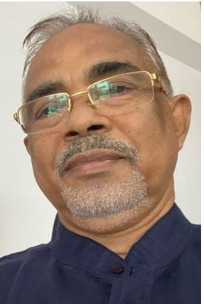
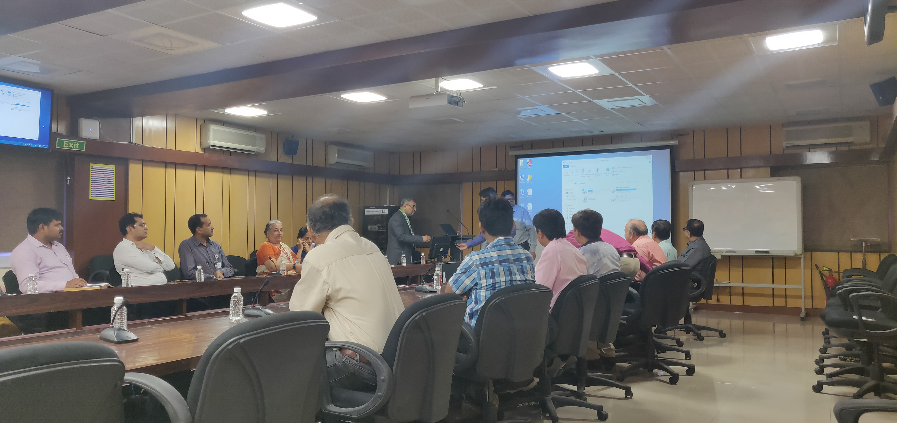
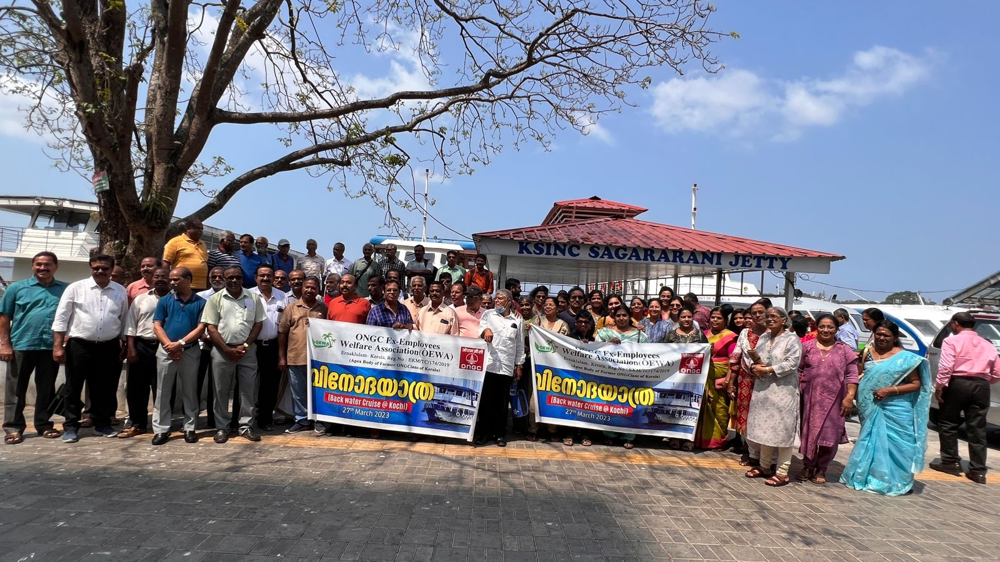

ONGC Ex-Employees Welfare Association (OEWA), Kerala
Serving Retired ONGC Employees Since 2019
Serving Retired ONGC Employees Since 2019
Connecting retired ONGC employees across Kerala through friendship, welfare activities, information sharing and community service.
The ONGC Ex-Employees Association (OEWA), Kerala was established in 2019 to bring together retired ONGC employees living in Kerala. The Association promotes fellowship, protects members' interests, organises social and cultural activities, and serves as a platform for sharing useful information related to pension, healthcare and welfare.

Welcome to the official website of ONGC Ex-Employees Association (OEWA), Kerala. It gives me immense pleasure to welcome every retired ONGC colleague and their family members to our Association. Since its formation in 2019, OEWA Kerala has worked to strengthen friendship, promote welfare activities and provide a common platform for retired employees across the State.
Read Full MessageGlimpses of our meetings, welfare programmes and social activities.

